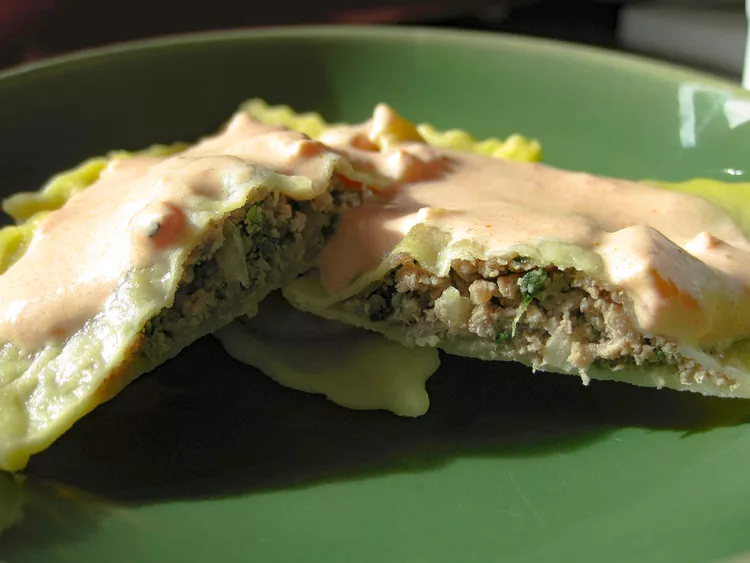

Raviolli
My grandmother made this when I was young.
Just found her old recipe book with it in it.

Ingridients
- 1 pound ground beef
- 1 ½ cups fresh spinach
- 5 tablespoons grated Parmesan cheese
- 1 ¼ tablespoons dried parsley
- ¼ cup bread crumbs
- ¼ cup olive oil
- 1 large egg
- ½ teaspoon garlic salt
- 1 pinch black pepper
How to prepare
- Heat a large skillet over medium-high heat and
stir in the ground beef. Cook and stir until
the beef is crumbly, evenly browned, and no
longer pink. Drain and discard any excess grease.
Stir in the spinach and cook until wilted,
about 1 to 2 minutes. Remove from heat and allow
to cool for 10 minutes.
- Transfer the beef mixture to a bowl. Add the
Parmesan, parsley, bread crumbs, olive oil,
egg, garlic salt, and pepper and mix well.
Run the filling through a grinder until smooth
(or puree in a food processor until smooth).
- The filling can be kept in the refrigerator
for up to four days or in the freezer for up
to three months.
Main page